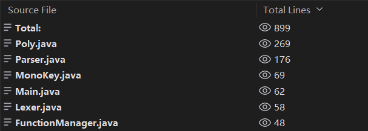
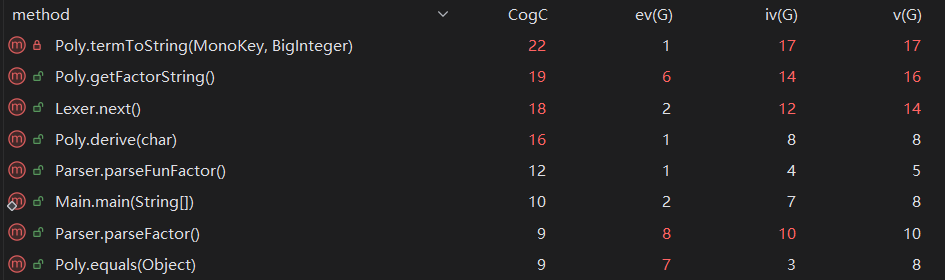
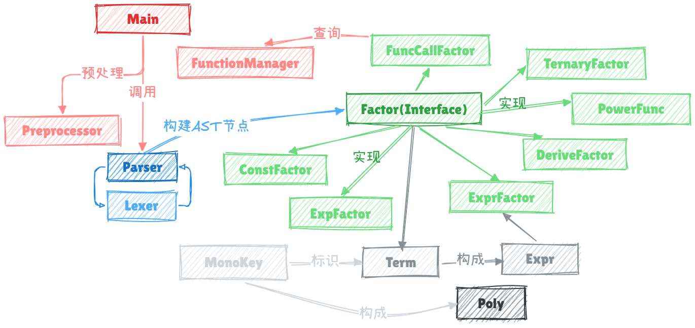

OO Unit1 总结
第一单元 OO 学习与反思
一、度量分析
1. 类与方法的复杂度分析
借助 MetricsReloaded 和 Statistics 插件，我对最终代码进行了度量分析。

从代码规模角度分析，可以看到整个项目的行数被控制在了一千行之内。总的来说实现较为精简。其中 Poly 类作为项目的主体，承担了大量的方法实现，略显臃肿。

从方法复杂度分析来看，问题偏大。认知复杂度最高的 termToString 方法为了满足性能分的要求，在其中加入了大量的条件判断，这使得代码的可读性受到影响。
一个或许可行的改进方法是对字符串的格式化逻辑进一步拆分，引入新的类专门处理项和字符串之间的转换。这样能更好地满足“高内聚，低耦合”的作业要求。
2. 类图与设计考虑
本项目的类图如下：

顶层模块
Main: 作为程序的入口，控制整体流程。Preprocessor: 负责清理输入中的空格/连续正负号等。Lexer: 词法分析器。Parser: 语法分析器。FunctionManager: 负责存储自定义函数和各阶递归函数的定义。
AST节点
Factor: 因子接口。为各类因子提供模板。ConstFactor: 常数因子节点。ExpFactor: 指数函数因子节点。ExprFactor: 表达式因子节点。DeriveFactor: 求导算子因子节点。TernaryFactor: 选择表达式因子节点。FuncCallFactor: 函数调用因子节点。PowerFunc: 幂函数因子节点。Term: 项节点，由多个Factor连乘构成。Expr: 表达式节点，由多个Term加减构成。
计算引擎
Monokey: 单项式特征类。Poly: 核心计算类。内部实现了多项式的各种计算方法。
二、架构设计体验
1. 迭代过程
-
首次作业基本搭建完成"词法分析-语法分析-建立AST-多项式计算"的整体架构。由于不知道后需迭代方向，初版代码实现较为粗糙。如存储多项式的方式为建立
map记录指数和系数的键值对。 -
迭代作业引入了选择表达式、可调用的自定义函数和指数函数。这带来的改变一方面是多项式的记录方式需要进行一定的重构，这个并不难，只要设计好哈希函数重构
HashMap的键值对构成即可。另一方面是考虑自定义函数的替换问题。我的解决方法是重构Poly.toPoly()方法，使得其可以将表达式代入自变量计算。然而本次架构的大改遗留了大量细微bug。测试不充分让我吃了大亏，直接掉进C房。具体情况在后续章节会提到。
-
最后一次作业的要求是支持双变量和引入求导因子。和上一次作业相比，此次的架构不需要进行大规模重构，只需略微改动因子接口然后逐步实现即可。
2. 新的迭代情景
- 一个可以设想的情形就是引入三角函数、反三角函数、对数函数等等。这其实不会引起大规模的结构变动。但指对数的相互抵消、三角反三角的相互抵消，将会为性能优化带来更多可能。
三、分析 BUG
1. 记录自己的 BUG
本次项目中只在首次迭代中出现了两个Bug。
- 第一个 BUG 来自我对数据范围改变的忽视。迭代时忘了将
Integer型统一改成BigInteger，导致强测没能通过。为避免这一问题，应更多关注迭代要求的细节。 - 第二个 BUG 其实不算一个 BUG，而是没有注意到课程组设计互测 cost 限制时的小巧思。选择表达式的 cost 不由选择件cost的最大值确定，而是只与被选择的表达式有关。这意味着在不被选择的表达式中加入极度复杂的嵌套不会超出 cost 限制，却能很好地叉掉不做短路判断的代码。
2. 发现他人 BUG 的策略
- 由于我代码阅读能力不算强，所以我 hack 的流程是以验证大家共性问题为主，跑评测机为辅。仅有的一次肉眼查出 BUG 是某位同学忘记删了一个隐秘角落中的调试代码。
四、关于优化
针对优化本题性能分这一NP-Hard问题，我第一反应其实是用启发式算法。但真正上手写了几行之后发现代码的逻辑复杂度会成指数级膨胀，且时间成本不好控制。（后面发现可以用内置计时器的方法解决）
因此我最终放弃了启发式算法，只运用了简单的提公因数手法。这使得我后两次作业都没能留在 A 房，但好在程序框架没有出大问题，保证了基础得分。
五、关于大模型使用
- 框架编写中大模型生成代码的含量大致在30%左右，性能优化则全部由我自己完成。
- 评测机完全由大模型搭建。自己和他人代码的查错工作有大模型的辅助。博客作业完全由自己完成。
- 评测机运行效果相当不错，基本能满足我的需求。在代码查错这一块部分国产大模型在上下文环境过长时表现会下降，因此简单将代码全部丢给它往往难以有效查出漏洞，只能收获反复说的车轱辘话甚至是AI幻觉。而 Gemini 模型的查错能力可以说是相当不错，常常能找出隐藏较深的 BUG。
- 互测房间内似乎没有发现明显的AI代码。
六、心得体会
实话实说，本次迭代作业中我最深刻的体会不是来自作业本身，而是来自大模型能力日新月异的发展。
记得上学期OOpre迭代的时候，我使用最多的大模型是deepseek，响应时间动辄十分钟，给出的回复往往也是泛泛而谈，分析出实质问题只是偶尔。几乎很难给到编程者实质性的辅助。而到了如今，只要你放心，甚至可以将代码编写全权下放给 ClaudeCode 这类 coding agent。
退一步来说，即使是延续网页端的对话模式，Gemini 等模型的能力已经足以完美解决 OO 课程的绝大部分任务。我常常会陷入沉思…AI时代我的优势究竟在哪？ 就为了那点所谓的总体把握架构的需要吗？可悲的是，未来的就业市场上其实不需要那么多有把握架构能力的人，只需要少量能继续投入 coding agent 开发的顶级大模型工程师罢了。至于其余产品线的维护、开发、测试，全部交给 agent 完成就行了。这个问题我目前难以有个答案。
但在 OO 作业面前，我还是保持对古法编程的尊重，几乎每一行代码都亲历亲为。防止将来的某一天，手敲代码的韵律完全在我脑中被抹去吧。如果一定要有这一天，我希望它往后推迟几天。
七、未来建议
总体上难度曲线还是较为合理的。硬要说的话可能是第一次迭代的工作量太大了，需要大量研究性能优化的手段，时间不够充裕往往考虑不足。或许课程组可以在性能优化的角度方面给予更多的引导。
八、思考题
1. 如何检查输入是否符合要求
- 预处理入口用正则表达式扫描字符串排除非法字符/字符组合。
- 在类似于
Parser的解析流程中，将违背规则的情况报告为异常。
2. 如何精确计算合法输入的 cost
没有往细里考虑它的具体实现，想来应该需要在各 AST 节点类中实现 getCost() 方法，然后根据规则自顶向下进行递归计算就是了。